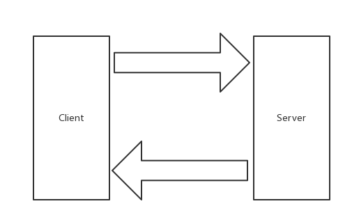

4.2 gRPC Client and Server
專案地址：https://github.com/EDDYCJY/go-grpc-example
前言
本章節將使用 Go 來編寫 gRPC Server 和 Client，讓其互相通訊。在此之上會使用到如下庫：
- google.golang.org/grpc
- github.com/golang/protobuf/protoc-gen-go
安裝
gRPC
go get -u google.golang.org/grpc
Protocol Buffers v3
wget https://github.com/google/protobuf/releases/download/v3.5.1/protobuf-all-3.5.1.zip
unzip protobuf-all-3.5.1.zip
cd protobuf-3.5.1/
./configure
make
make install
檢查是否安裝成功
protoc --version
若出現以下錯誤，執行 ldconfig 命名就能解決這問題
protoc: error while loading shared libraries: libprotobuf.so.15: cannot open shared object file: No such file or directory
Protoc Plugin
go get -u github.com/golang/protobuf/protoc-gen-go
安裝環境若有問題，可參考我先前的文章 《介紹與環境安裝》 內有詳細介紹，不再贅述
gRPC
本小節開始正式編寫 gRPC 相關的程式，一起上車吧 😄
圖示

目錄結構
$ tree go-grpc-example
go-grpc-example
├── client
├── proto
│ └── search.proto
└── server.go
IDL
編寫
在 proto 資料夾下的 search.proto 檔案中，寫入如下內容：
syntax = "proto3";
package proto;
service SearchService {
rpc Search(SearchRequest) returns (SearchResponse) {}
}
message SearchRequest {
string request = 1;
}
message SearchResponse {
string response = 1;
}
生成
在 proto 資料夾下執行如下命令：
$ protoc --go_out=plugins=grpc:. *.proto
- plugins=plugin1+plugin2：指定要載入的子外掛列表
我們定義的 proto 檔案是涉及了 RPC 服務的，而預設是不會生成 RPC 程式碼的，因此需要給出 plugins 引數傳遞給 protoc-gen-go，告訴它，請支援 RPC（這裡指定了 gRPC）
- --go_out=.：設定 Go 程式碼輸出的目錄
該指令會載入 protoc-gen-go 外掛達到生成 Go 程式碼的目的，生成的檔案以 .pb.go 為檔案字尾
- : （冒號）
冒號充當分隔符的作用，後跟所需要的引數集。如果這處不涉及 RPC，命令可簡化為：
$ protoc --go_out=. *.proto
注：建議你看看兩條命令生成的 .pb.go 檔案，分別有什麼區別
生成後
執行完畢命令後，將得到一個 .pb.go 檔案，檔案內容如下：
type SearchRequest struct {
Request string `protobuf:"bytes,1,opt,name=request" json:"request,omitempty"`
XXX_NoUnkeyedLiteral struct{} `json:"-"`
XXX_unrecognized []byte `json:"-"`
XXX_sizecache int32 `json:"-"`
}
func (m *SearchRequest) Reset() { *m = SearchRequest{} }
func (m *SearchRequest) String() string { return proto.CompactTextString(m) }
func (*SearchRequest) ProtoMessage() {}
func (*SearchRequest) Descriptor() ([]byte, []int) {
return fileDescriptor_search_8b45f79ee13ff6a3, []int{0}
}
func (m *SearchRequest) GetRequest() string {
if m != nil {
return m.Request
}
return ""
}
透過閱讀這一部分程式碼，可以知道主要涉及如下方面：
- 欄位名稱從小寫下劃線轉換為大寫駝峰模式（欄位匯出）
- 生成一組 Getters 方法，能便於處理一些空指標取值的情況
- ProtoMessage 方法實作 proto.Message 的介面
- 生成 Rest 方法，便於將 Protobuf 結構體恢復為零值
- Repeated 轉換為切片
type SearchRequest struct {
Request string `protobuf:"bytes,1,opt,name=request" json:"request,omitempty"`
}
func (*SearchRequest) Descriptor() ([]byte, []int) {
return fileDescriptor_search_8b45f79ee13ff6a3, []int{0}
}
type SearchResponse struct {
Response string `protobuf:"bytes,1,opt,name=response" json:"response,omitempty"`
}
func (*SearchResponse) Descriptor() ([]byte, []int) {
return fileDescriptor_search_8b45f79ee13ff6a3, []int{1}
}
...
func init() { proto.RegisterFile("search.proto", fileDescriptor_search_8b45f79ee13ff6a3) }
var fileDescriptor_search_8b45f79ee13ff6a3 = []byte{
// 131 bytes of a gzipped FileDescriptorProto
0x1f, 0x8b, 0x08, 0x00, 0x00, 0x00, 0x00, 0x00, 0x02, 0xff, 0xe2, 0xe2, 0x29, 0x4e, 0x4d, 0x2c,
0x4a, 0xce, 0xd0, 0x2b, 0x28, 0xca, 0x2f, 0xc9, 0x17, 0x62, 0x05, 0x53, 0x4a, 0x9a, 0x5c, 0xbc,
0xc1, 0x60, 0xe1, 0xa0, 0xd4, 0xc2, 0xd2, 0xd4, 0xe2, 0x12, 0x21, 0x09, 0x2e, 0xf6, 0x22, 0x08,
0x53, 0x82, 0x51, 0x81, 0x51, 0x83, 0x33, 0x08, 0xc6, 0x55, 0xd2, 0xe1, 0xe2, 0x83, 0x29, 0x2d,
0x2e, 0xc8, 0xcf, 0x2b, 0x4e, 0x15, 0x92, 0xe2, 0xe2, 0x28, 0x82, 0xb2, 0xa1, 0x8a, 0xe1, 0x7c,
0x23, 0x0f, 0x98, 0xc1, 0xc1, 0xa9, 0x45, 0x65, 0x99, 0xc9, 0xa9, 0x42, 0xe6, 0x5c, 0x6c, 0x10,
0x01, 0x21, 0x11, 0x88, 0x13, 0xf4, 0x50, 0x2c, 0x96, 0x12, 0x45, 0x13, 0x85, 0x98, 0xa3, 0xc4,
0x90, 0xc4, 0x06, 0x16, 0x37, 0x06, 0x04, 0x00, 0x00, 0xff, 0xff, 0xf3, 0xba, 0x74, 0x95, 0xc0,
0x00, 0x00, 0x00,
}
而這一部分程式碼主要是圍繞 fileDescriptor 進行，在這裡 fileDescriptor_search_8b45f79ee13ff6a3 表示一個編譯後的 proto 檔案，而每一個方法都包含 Descriptor 方法，代表著這一個方法在 fileDescriptor 中具體的 Message Field
Server
這一小節將編寫 gRPC Server 的基礎模板，完成一個方法的呼叫。對 server.go 寫入如下內容：
package main
import (
"context"
"log"
"net"
"google.golang.org/grpc"
pb "github.com/EDDYCJY/go-grpc-example/proto"
)
type SearchService struct{}
func (s *SearchService) Search(ctx context.Context, r *pb.SearchRequest) (*pb.SearchResponse, error) {
return &pb.SearchResponse{Response: r.GetRequest() + " Server"}, nil
}
const PORT = "9001"
func main() {
server := grpc.NewServer()
pb.RegisterSearchServiceServer(server, &SearchService{})
lis, err := net.Listen("tcp", ":"+PORT)
if err != nil {
log.Fatalf("net.Listen err: %v", err)
}
server.Serve(lis)
}
- 建立 gRPC Server 物件，你可以理解為它是 Server 端的抽象物件
- 將 SearchService（其包含需要被呼叫的服務端介面）註冊到 gRPC Server 的內部註冊中心。這樣可以在接受到請求時，透過內部的服務發現，發現該服務端介面並轉接進行邏輯處理
- 建立 Listen，監聽 TCP 埠
- gRPC Server 開始 lis.Accept，直到 Stop 或 GracefulStop
Client
接下來編寫 gRPC Go Client 的基礎模板，開啟 client/client.go 檔案，寫入以下內容：
package main
import (
"context"
"log"
"google.golang.org/grpc"
pb "github.com/EDDYCJY/go-grpc-example/proto"
)
const PORT = "9001"
func main() {
conn, err := grpc.Dial(":"+PORT, grpc.WithInsecure())
if err != nil {
log.Fatalf("grpc.Dial err: %v", err)
}
defer conn.Close()
client := pb.NewSearchServiceClient(conn)
resp, err := client.Search(context.Background(), &pb.SearchRequest{
Request: "gRPC",
})
if err != nil {
log.Fatalf("client.Search err: %v", err)
}
log.Printf("resp: %s", resp.GetResponse())
}
- 建立與給定目標（服務端）的連線互動
- 建立 SearchService 的客戶端物件
- 傳送 RPC 請求，等待同步響應，得到回撥後返回響應結果
- 輸出響應結果
驗證
啟動 Server
$ pwd
$GOPATH/github.com/EDDYCJY/go-grpc-example
$ go run server.go
啟動 Client
$ pwd
$GOPATH/github.com/EDDYCJY/go-grpc-example/client
$ go run client.go
2018/09/23 11:06:23 resp: gRPC Server
總結
在本章節，我們對 Protobuf、gRPC Client/Server 分別都進行了介紹。希望你結合文中講述內容再寫一個 Demo 進行深入瞭解，肯定會更棒 🤔